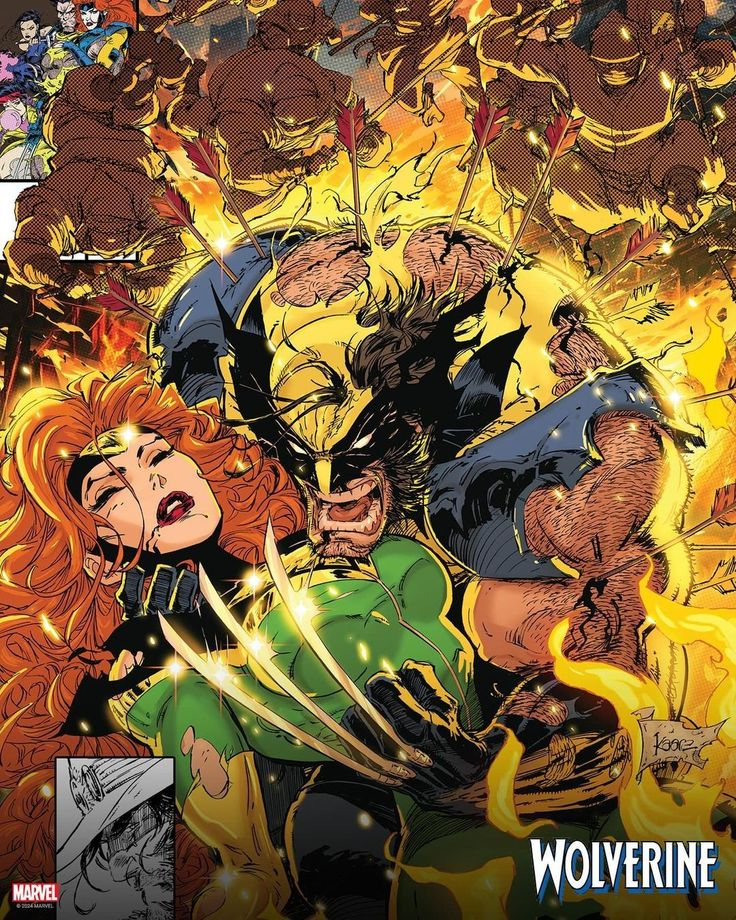

Wolverine casi se llama "The Badger"
Antes de que el nombre "Wolverine" se estableciera, los creativos de Marvel barajaron otras opciones, y una de ellas fue "The Badger" (El Tejón). Ambos animales son conocidos por su ferocidad, pero finalmente se optó por "Wolverine" debido a su fuerza, agresividad y asociación con Canadá, de donde proviene el personaje.
Este detalle curioso revela cómo los nombres pueden definir profundamente la percepción de un personaje. “Wolverine” evoca misterio, peligro y naturaleza salvaje. Además, el nombre fue un acierto en términos de sonoridad e imagen de marca, algo crucial en la creación de íconos de la cultura pop.
Desde su debut en The Incredible Hulk #180-181 (1974), Wolverine se convirtió en uno de los miembros más populares de los X-Men. Su carácter rudo, su habilidad regenerativa y su pasado oscuro lo convirtieron en un favorito entre los fans, algo que quizás no habría sido igual si se hubiese llamado “The Badger”.
← Volver a curiosidades de Marvel